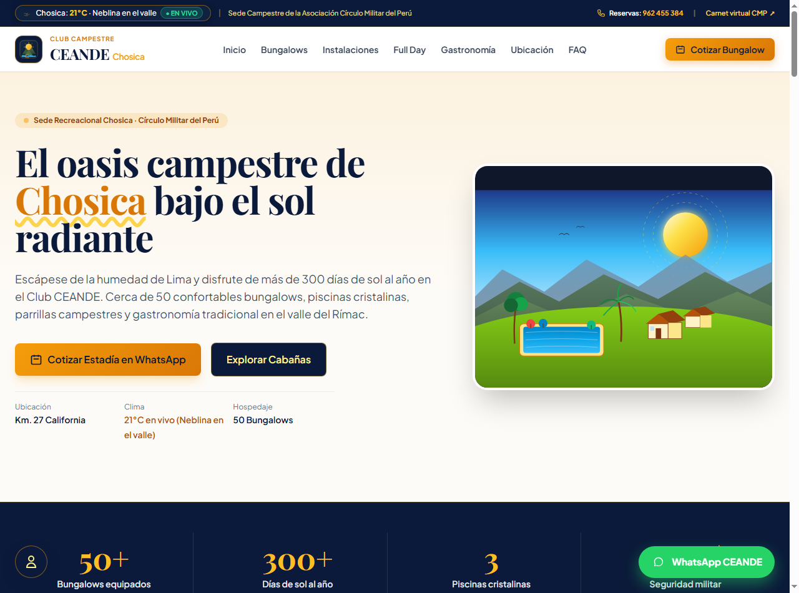

Clima Perú (API Open-Meteo)
Aplicación que permite seleccionar distintas ciudades del Perú y consultar su estado meteorológico actual en tiempo real mediante peticiones asíncronas en JavaScript y manejo de respuestas JSON.
Estudiante de Diseño y Desarrollo de Sistemas · Tecsup
Desarrollo interfaces web y aplicaciones prácticas como parte de mi formación en Diseño y Desarrollo de Sistemas. Trabajo con HTML5, CSS3, JavaScript y bases de datos MySQL para construir páginas estructuradas, adaptables a distintos dispositivos y fáciles de usar.

Actualmente curso la carrera de Diseño y Desarrollo de Sistemas en Tecsup, donde aprendo a estructurar aplicaciones web desde el diseño de la interfaz hasta su conexión con datos reales.
En el curso de Diseño de Interfaces, dictado por el docente Miguel Pallín, me enfoco en comprender cómo organizar la información en pantalla, aplicar buenas prácticas de maquetación semántica y lograr que un sitio web funcione correctamente tanto en una computadora de escritorio como en un teléfono móvil.
Prefiero trabajar con código limpio y ordenado, separando claramente la estructura (HTML5), la presentación visual (CSS3) y el comportamiento interactivo (JavaScript), además de documentar y publicar mis avances en repositorios de GitHub.
Uso de contenedores flexibles, CSS Grid, Flexbox y Media Queries para que la lectura y los controles se adapten a cualquier tamaño de pantalla.
Manejo del DOM, validación de formularios en el cliente y peticiones asíncronas con fetch() para integrar información de APIs públicas.
Conexión de formularios web con scripts en PHP y tablas en MySQL alojadas en servidores web como InfinityFree.
Herramientas que he aplicado de forma práctica en los laboratorios y proyectos de la carrera.
Construcción de páginas estructuradas con etiquetas semánticas, variables CSS, diseño adaptable a móviles y formularios accesibles.
Programación de filtros dinámicos, calculadoras interactivas, menús móviles, modales nativos y consumo de servicios externos como Open-Meteo.
Creación de tablas relacionales, recepción de datos mediante peticiones POST y registro seguro con consultas preparadas.
Publicación de proyectos estáticos en GitHub Pages y despliegue de sitios con soporte PHP/MySQL en servidores de hosting web.
Proyectos desarrollados durante mis cursos. Puedes filtrarlos por tipo o ampliar cada captura.
Aplicación que permite seleccionar distintas ciudades del Perú y consultar su estado meteorológico actual en tiempo real mediante peticiones asíncronas en JavaScript y manejo de respuestas JSON.

Landing page adaptable con catálogo de cabañas, tarifas de pasadía y un cotizador programado en JavaScript que calcula el costo según número de noches y servicios adicionales.

Estructura web multipágina con navegación entre secciones de inicio, nosotros, galería fotográfica, formulario de contacto y vista de acceso de usuarios.

Conexión entre interfaces de usuario y base de datos relacional en InfinityFree para guardar registros enviados desde formularios web y visualizarlos en una tabla dinámica.
Comentarios de mi docente del curso de Diseño de Interfaces y de compañeros de aula en la carrera de Diseño y Desarrollo de Sistemas.
"En el desarrollo del curso de Diseño de Interfaces, Alexis ha cumplido de forma ordenada con la maquetación en HTML5, CSS3 y JavaScript, aplicando diseño adaptable y conectando correctamente su proyecto con el servidor y la base de datos."
"Durante las prácticas de laboratorio en Diseño y Desarrollo de Sistemas hemos compartido varias sesiones de programación. Alexis organiza bien sus archivos CSS y JavaScript y cuida que las páginas se adapten sin desbordarse en pantallas móviles."
"Trabajar en el mismo salón del curso de Diseño de Interfaces me ha permitido ver su avance con GitHub y el despliegue en InfinityFree. Siempre verifica que cada formulario y enlace funcione antes de entregar una práctica."
Si deseas comunicarte conmigo por algún proyecto académico o revisar el funcionamiento del registro en base de datos, puedes usar el formulario o los enlaces directos.
Los datos enviados se guardan en la tabla contactos de MySQL en InfinityFree y envían una copia a mi correo institucional.